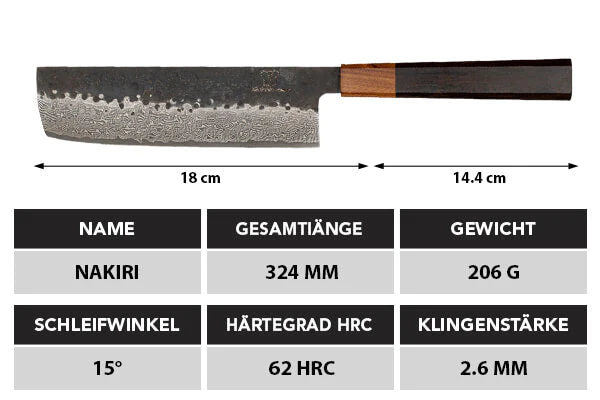
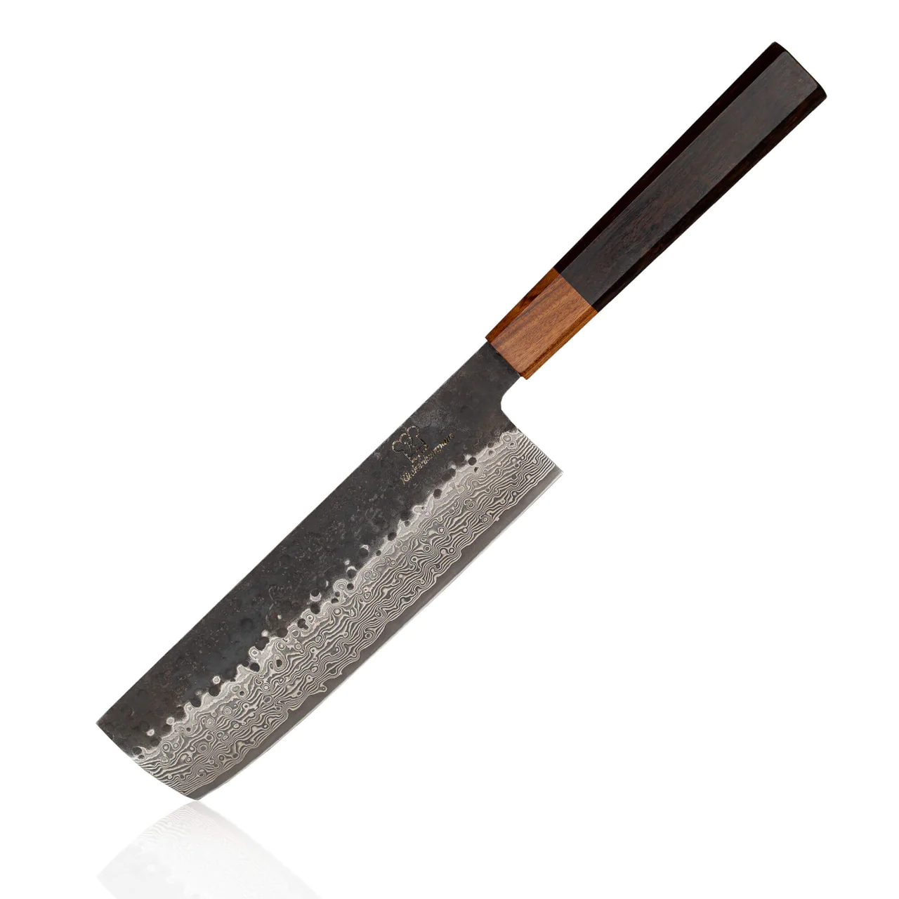
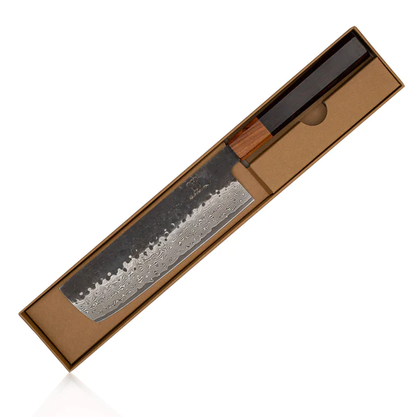

  
Die Geschichte des Nakiri Messers ist eine lange und komplexe. Es stammt aus Japan, wo es schon seit vielen Jahren als Küchengerät verwendet wird. Das Besondere an diesem Messer ist, dass es auch für den Haushalt bestimmt ist und nicht nur zum Zerkleinern von Lebensmitteln. Dies liegt daran, dass der Klingenwinkel beim Nakiri-Messer flach bleibt, wodurch eine präzise und glatte Schnittführung ermöglicht wird.
Die Geschichte des Nakiri-Messers reicht bis ins 17. Jahrhundert zurück. Damals begannen japanische Schmiede damit, dieses spezielle Kochmesser zu entwickeln. Der Name „Nakiri“ stammt von den Worten „na“ (in) und „kiri“ (schneiden), was auf die klare Schneidfunktion hinweist, für die es entwickelt wurde.
Das Nakiri-Messer ist auch heute noch ein sehr begehrtes Küchenwerkzeug. Es ist dafür bekannt, exzellente Ergebnisse zu liefern und es verfügt über eine glatte Klingenkante, die es ideal für feines Schneiden macht. Mit dem Nakiri-Messer können Sie Gemüse und andere Lebensmittel schnell und präzise schneiden, ohne die Struktur der Zutaten zu beeinträchtigen. Zudem ist das Messer sehr leicht und handlich, so dass es bequem zu bedienen ist.
Heutzutage produzieren viele Hersteller verschiedene Arten von Nakiri-Messern aus unterschiedlichen Materialien wie Edelstahl, Keramik oder Holz. Sie variieren in Größe, Gewicht und Preis. Der beste Weg, um herauszufinden, welches Messer am besten für Ihre Bedürfnisse geeignet ist, ist die Probiermethode: Suchen Sie sich am besten eine Reihe verschiedener Messer aus und vergleichen Sie die Klinge, das Gewicht und den Preis.
Nakiri-Messer sind sehr multifunktional. Sie können nicht nur zum Zerkleinern von Gemüse verwendet werden, sondern auch zum Tranchieren und Schneiden in dickere Stücke. Aufgrund ihrer präzisen Schnittführung eignen sie sich hervorragend für diese Aufgaben. Außerdem ist es ein sehr langlebiges Messer, das auch nach vielen Jahren des Gebrauchs noch gut in Form bleibt.
Die Geschichte des Nakiri-Messers ist eine interessante und lange Reise. Ausgestattet mit den besten Materialien und neuesten Technologien wird dieses Messer immer die Küchen der ganzen Welt erobern! Nicht nur für Profiköche, sondern auch für den Heimgebrauch ist es die perfekte Lösung zum Schneiden aller Arten von Lebensmitteln. Mit dem Nakiri-Messer können Sie leckere und schmackhafte Ergebnisse erzielen, die Ihnen viele Jahre Freude bereiten werden.
Vor- und Nachteile von Nakiri Messern: Vorteile:
Ein Nakiri Messer ist eine großartige Wahl für alle, die gerne kochen. Es ist leicht zu handhaben und ermöglicht es Ihnen, Gemüse und andere Produkte einfach zu schneiden und perfekt zuzubereiten. Wenn Sie jedoch noch nie zuvor ein Nakiri Messer verwendet haben, könnte es etwas schwierig sein, sich an all die Einzelheiten zu erinnern und den richtigen Umgang damit zu lernen. Daher möchten wir Ihnen hier einige Tipps geben, wie Sie ein Nakiri Messer richtig verwenden. Um das bestmögliche Ergebnis zu erzielen, ist es wichtig, dass Sie den richtigen Winkel beim Schneiden wählen. Mit einem Nakiri Messer können Sie mit einer einzigen Bewegung eine scharfe, saubere Kante auf Ihren Lebensmitteln erzeugen. Wenn Sie jedoch den falschen Winkel verwenden, endet das Ergebnis nicht so scharf und sauber. Um den richtigen Winkel zu erhalten, halten Sie das Messer bei einem 45-Grad-Winkel zur Schneide. Weitere Tipps bei der Verwendung eines Nakiri Messers sind: Achten Sie darauf, das Messer nicht zu tief in das Schneidbrett einzutauchen, da dadurch die Schneidkante beschädigt werden kann. Verwenden Sie das Messer nur auf einem stabilen Schneidebrett, um ein Herunterrutschen zu vermeiden. Verwenden Sie nicht mehr Kraft als notwendig, um scharfe Schnitte zu erzielen. Wenn Sie diese Tipps befolgen, können Sie das Beste aus Ihrem Nakiri Messer herausholen. Vergessen Sie nicht, das Messer scharf zu halten und regelmäßig zu ölen, um Rostbildung und die Abnutzung der Schneidkante zu vermeiden. Mit der richtigen Pflege und Handhabung können Sie lange und glücklich mit Ihrem Nakiri Messer schneiden. Viel Glück! Egal ob Sie ein Profi oder ein Anfänger im Kochen sind, ein Nakiri Messer ist eine großartige Wahl für alle, die gerne kochen. Wenn Sie es richtig verwenden, können Sie glatte, präzise Schnitte erstellen und Ihren Geschmacksträumen freien Lauf lassen! Mit den oben genannten Tipps können Sie das Beste aus Ihrem Nakiri Messer herausholen – kochen Sie also los und genießen Sie!